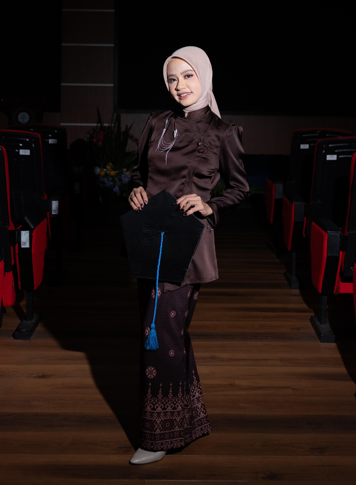
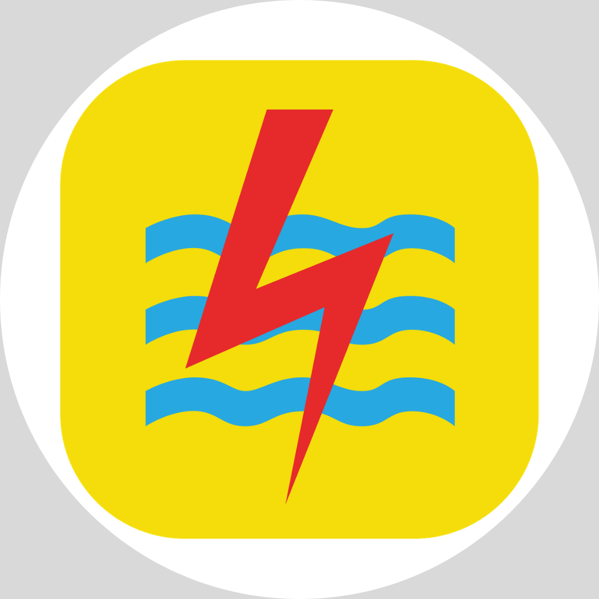
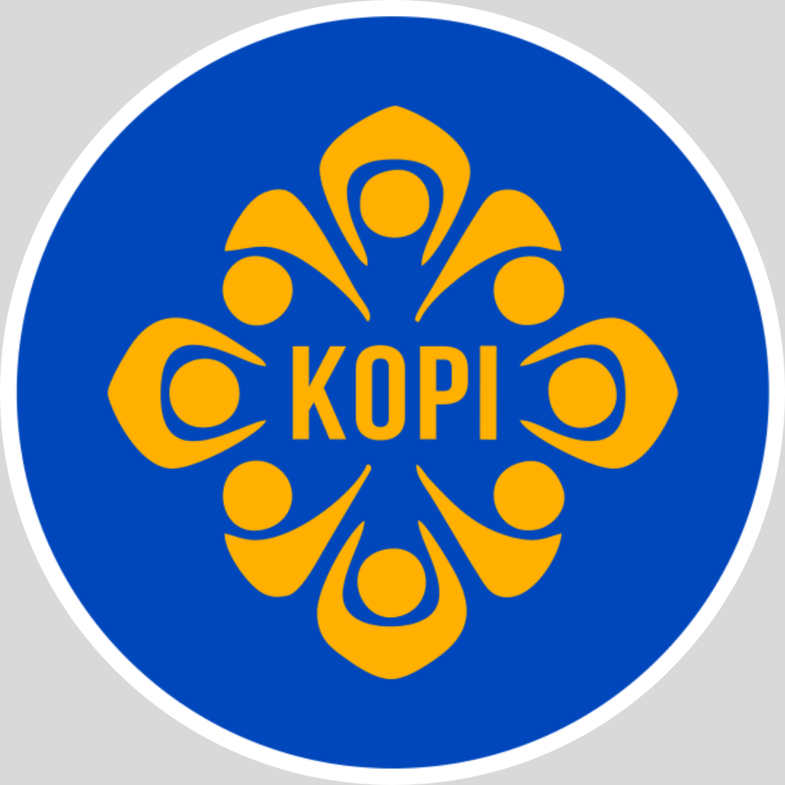
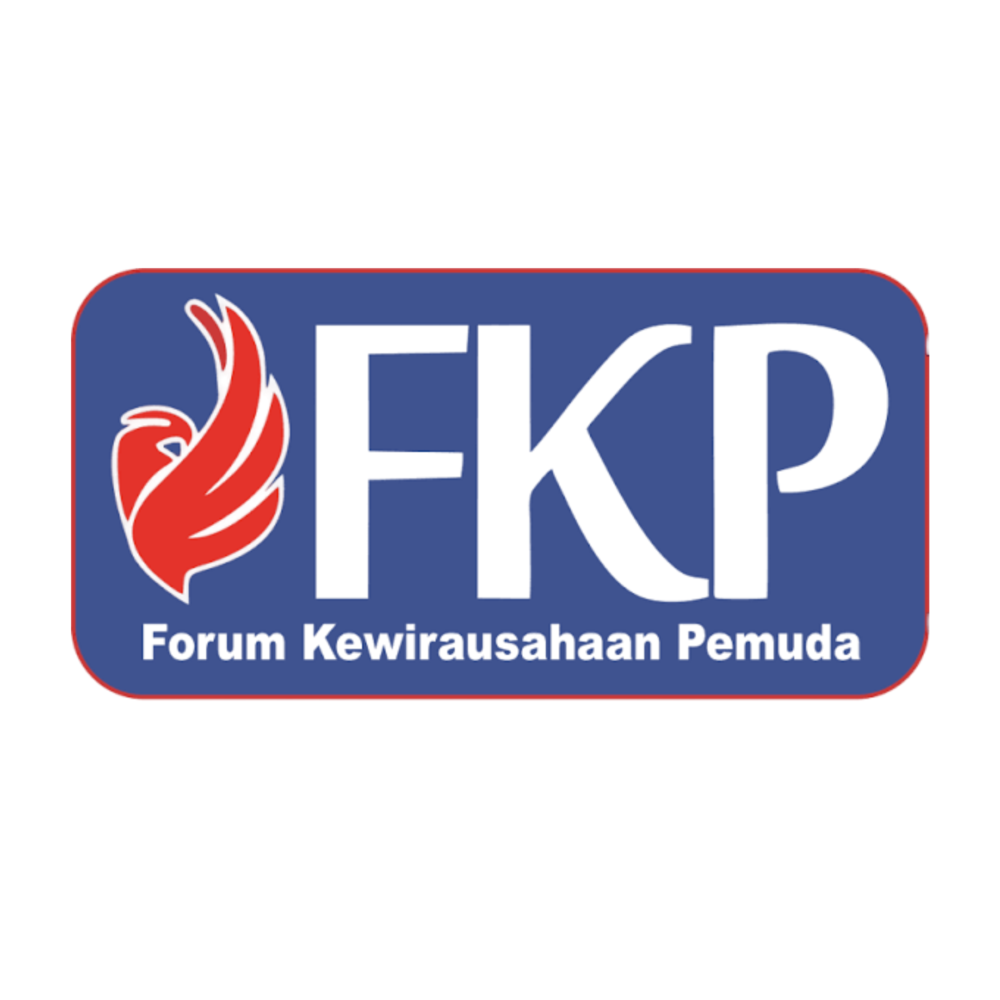
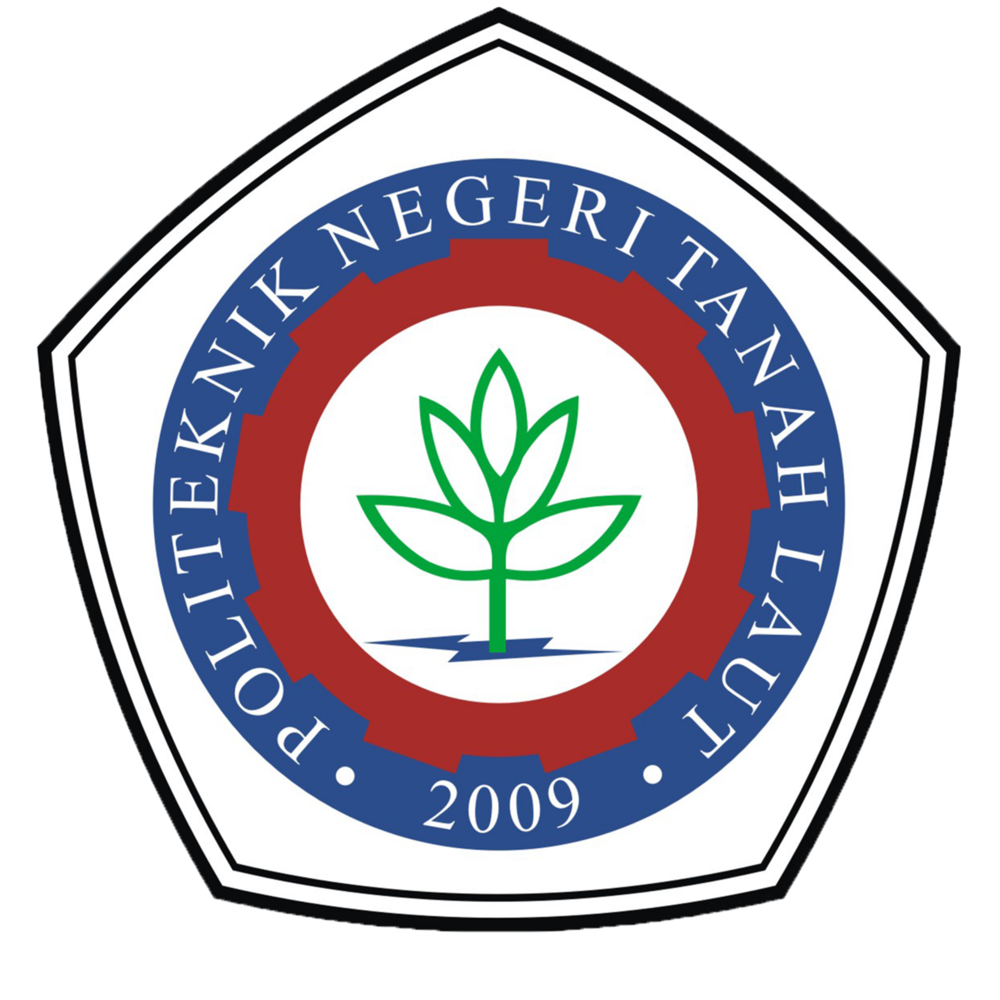

Web Application
Web Application
Sistem Presensi Peserta Magang
Sistem presensi berbasis web dengan pencatatan kehadiran dan lokasi peserta magang.
Hello, I'm
Lulusan D3 Teknologi Informasi yang memiliki ketertarikan pada pengembangan web, analisis data, dan pemanfaatan teknologi.

Fresh Graduate Diploma III Teknologi Informasi dari Politeknik Negeri Tanah Laut dengan IPK 3.83/4.00 yang memiliki ketertarikan pada pengembangan website, analisis data, pengolahan data, serta dokumentasi.
Saya terbiasa mengerjakan pekerjaan administratif, mengelola data, berkomunikasi dengan berbagai pihak, serta mengembangkan solusi berbasis teknologi untuk mendukung kebutuhan pekerjaan.
Pengalaman kerja yang membentuk kemampuan administrasi, pelayanan, koordinasi, dan pengembangan sistem.
Bertanggung jawab dalam merencanakan dan melaksanakan berbagai kegiatan dan acara, mengoordinasikan tim serta kebutuhan operasional, menjalin komunikasi dengan klien, vendor, dan pihak terkait, serta mendokumentasikan setiap kegiatan.

Bertanggung jawab dalam pelayanan pelanggan secara langsung maupun melalui WhatsApp, pemesanan layanan sesuai kebutuhan pelanggan melalui sistem CRM, pengelolaan sistem CRM, input data work order, membantu publikasi informasi melalui Instagram PLN, serta pembangunan sistem presensi magang berbasis GPS.
Bertanggung jawab dalam pengelolaan administrasi dan keuangan Biro Rumah Tangga, mulai dari penyusunan dan pengajuan anggaran, proses pencairan dana, realisasi penggunaan dana, hingga penyusunan laporan pertanggungjawaban keuangan.
Pengalaman berorganisasi yang membantu membangun kemampuan kepemimpinan, administrasi, komunikasi, dan koordinasi.

Mengelola administrasi organisasi, membantu koordinasi kegiatan, menyusun dokumentasi dan surat-menyurat, serta mendukung pelaksanaan program organisasi.

Mendukung pengelolaan administrasi organisasi, dokumentasi kegiatan, serta membantu koordinasi berbagai kebutuhan administratif organisasi.
Kemampuan teknis dan profesional yang saya kembangkan melalui pendidikan, pengalaman kerja, organisasi, dan berbagai project.
Analisis kebutuhan sistem, perancangan alur proses, dan pemecahan masalah.
Pengembangan website dan sistem informasi berbasis web.
Pengolahan dokumen, data, spreadsheet, dan kebutuhan administrasi.
Pengelolaan, pengolahan, dan penyusunan data secara terstruktur.
Dokumentasi kegiatan dalam bentuk foto, video, dan arsip digital.
Pengolahan visual dan desain foto untuk kebutuhan digital dan dokumentasi.
Beberapa project yang berkaitan dengan teknologi informasi, pengembangan sistem, dan kebutuhan digital.
Web Application
Sistem presensi berbasis web dengan pencatatan kehadiran dan lokasi peserta magang.
 Information System
Information System
Sistem informasi untuk membantu pengelolaan data inventaris dan proses peminjaman barang secara terstruktur.
 Web Design
Web Design
Website portfolio pribadi untuk menampilkan profil, pendidikan, pengalaman, skills, dan berbagai project.

Mempelajari dasar dan penerapan teknologi informasi, pengembangan perangkat lunak, sistem informasi, basis data, serta pemecahan masalah menggunakan teknologi.
Menempuh pendidikan menengah serta aktif dalam berbagai kegiatan sekolah, kepanitiaan, dan kegiatan kepramukaan.
Saya terbuka untuk kesempatan kerja, kolaborasi, maupun project yang berkaitan dengan teknologi, administrasi, data, dan pengembangan sistem.
Get In Touch